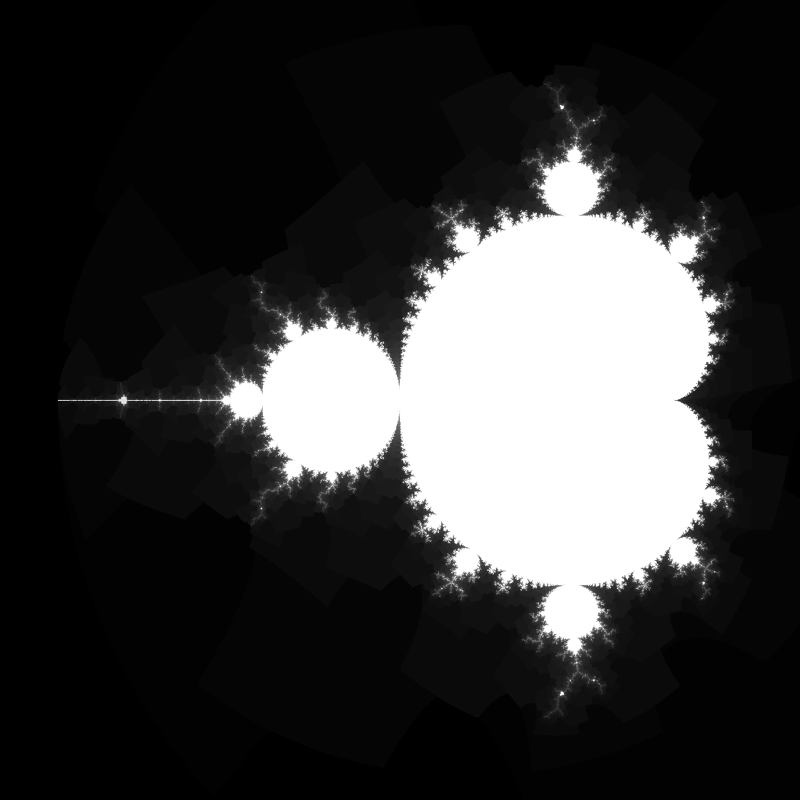
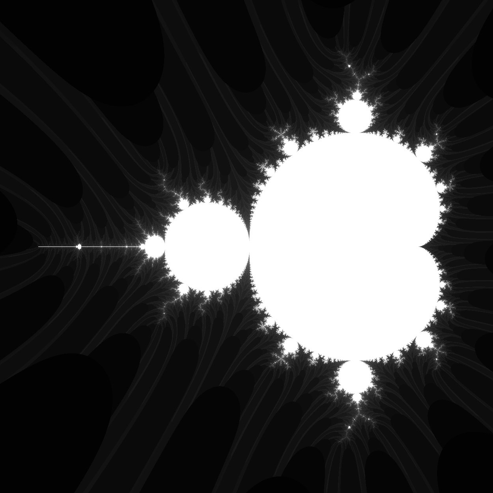

The Mandelbrot set is probably the most well known fractal of all and is named after the discoverer of fractals, Bernoit Mandelbrot himself. The Mandelbrot set is defined as the complex numbers \( c \) for which the recursive function \( z_{n+1} = z_n^2 + c \) converges when iterated from \( z = 0 \); if a value diverges, it breaks the bounds of the fractal and is thus not part of the set.
Given the function, a few things may be noted. The first thing that should be noted is that \( z \) is a complex number meaning that it has both a real and an imaginary component and thus can be expressed as follows (\( x_0 \) and \( y_0 \) being the starting values):
$$ z = x + iy $$ $$ z^2 = x^2 + i2xy - y^2 $$ $$ c = x_0 + iy_0 $$The real component of the function, meaning \( \Re(z^2 + c) = x^2 - y^2 + x_0 \), can then be graphed along the x-axis and the imaginary component, meaning \( \Im(z^2 + c) = 2xy + y_0 \), graphed along the y-axis, the color or shading being determined by the number of iterations. Doing this will result in an image, or graph, as follows, this being the Mandelbrot set. The image can be seen below, figure 1.
Figure 1: Image of the Mandelbrot set.
Figure 2: Slightly different image of the Mandelbrot set.
The Processing (Java) code for generating the image in figure 1 can be seen below.
int n_max = 200;
float s = 4;
int bound = 2;
void setup() {
size(1050, 1050);
}
void draw() {
background(0);
int k = 0;
loadPixels();
for (int j = 0; j < height; j++) {
for (int i = 0; i < width; i++) {
//float x0 = map(i, 0+200, width+200, -.625*4, .25*4);
//float y0 = map(j, 0+200, height+200, -.3525*4, .3525*4);
float x0 = map(i, 0-40, width-40, -.58*s, .15*s);
float y0 = map(j, 0, height, -.3525*s, .3525*s);
float x = 0.0;
float y = 0.0;
int n = 0;
for (int u = n_max; u > 1; u--) {
while (x*x + y*y <= 4 && n < n_max/u) {
float x_temp = x*x - y*y + x0;
y = 2*x*y + y0;
x = x_temp;
n++;
}
//if (x*x + y*y <= bound) {
if (x*x + 2*x*y - y*y <= bound) {
pixels[k] =
color(map(255 * n/n_max, 255*1/n_max, 95, 0, 255));
}
}
k++;
}
}
updatePixels();
}